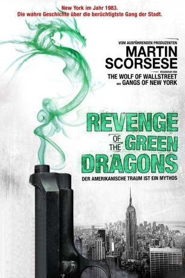
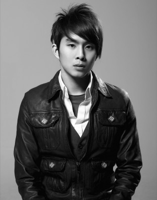

#7537 Revenge of the Green Dragons
 
 IMDB-Wertung: 5.3 / 10
IMDB-Wertung: 5.3 / 10  Tomatometer: 16
Tomatometer: 16  Metascore: 0
Metascore: 0 
Die chinesischen Brüder Sonny (Justin Chon) und Steven (Kevin Wu) sind in die USA gekommen, um den amerikanischen Traum zu leben. Die Verarmung im New York der 80er Jahre wächst jedoch stetig und so schließen sich die beiden Einwanderer der Chinatown-Gang „The Green Dragons“ an. Dort fassen sie schnell Fuß und steigen ohne Umschweife die Rangleiter hinauf. Doch mit ihren Aktivitäten erregen sie bald die Aufmerksamkeit des Polizisten Michael Bloom (Ray Liotta). Nach einer unglückseligen Liebesbeziehung Sonnys droht die familiäre Bande zwischen den Geschwistern schließlich auseinanderzubrechen, denn der von Liebeskummer geplagte Mann stellt sich nicht nur gegen seinen eigenen Bruder, sondern gegen ihre gesamte Gang. Er will Rache an denen, die ihn zu dem gemacht haben, was er nun ist.
Jahr: 2014
Dauer: 94 Minuten
FSK: 18
Land: Hong-Kong Studio: Koch MediaTonspuren: DTS - ,
Untertitel: Deutsch,
Auflösung: 1080p (1920x800) Größe: 5672 MB
Genre: Action, Drama, Krimi
Regisseur: Wai-Keung Lau, Andrew Loo
Drehbuch: Fredric Dannen
Soundtrack:
Darsteller:
-  Justin Chon als Sonny
- Kevin Wu als Steven
 Harry Shum Jr. als Paul
Harry Shum Jr. als Paul Eugenia Yuan als Snakehead Mama
Eugenia Yuan als Snakehead Mama- Leonard Wu als Ah Chung
- Jin Au-Yeung als Detective Tang
- Jon Kit Lee als Teddy
- Shuya Chang als Tina
- Alex Fox als Little Sonny
- Michael Gregory Fung als Little Steven
 Celia Au als Bobo
Celia Au als Bobo Ron Yuan als Born to Kill Dai Lo
Ron Yuan als Born to Kill Dai Lo Billy Magnussen als Detective Boyer
Billy Magnussen als Detective Boyer Geoff Pierson als FBI Director Sam Higgins
Geoff Pierson als FBI Director Sam Higgins Ray Liotta als Michael Bloom
Ray Liotta als Michael Bloom- Carl Li als Chicken Wing
- Shing Ka als Ah Tai
- Carlos Long als Fat Foo
- Linda Wang als Mrs. Wan
- Shang-Ho Huang als Tien Chau Manager
- Nick Sullivan als Mr. Charles
 Phil Nee als Tong Bossman #2
Phil Nee als Tong Bossman #2- Nahanni Johnstone als Beach Reporter
 Joe Starr als Guido
Joe Starr als Guido- Geoff Lee als Charlie Lo
 Lil Rhee als Susan Lo
Lil Rhee als Susan Lo Jim Ford als Anthony Gallivan
Jim Ford als Anthony Gallivan Joanna Adler als Prosecutor Gwen Shore
Joanna Adler als Prosecutor Gwen Shore- Lauren Schaffel als Shore Assistant
 Alysia Reiner als Court Reporter
Alysia Reiner als Court Reporter- Fala Chen als Bloom's Wife
- Michelle Guo als Eileen Tang
- Marco Palou als Puerto Rican Kid
 Tommy Bayiokos als NYPD Officer Delle , uncredited
Tommy Bayiokos als NYPD Officer Delle , uncredited- Ralph Bracco als Arresting Police Officer at Park , uncredited
- Joe Carr als FBI Agent , uncredited
 Chris J. Cullen als Police Officer , uncredited
Chris J. Cullen als Police Officer , uncredited- John Damroth als Task Force Detective , uncredited
 Edward M. Kelahan als Arresting Detective , uncredited
Edward M. Kelahan als Arresting Detective , uncredited- Steve Mason als (uncredited
- Jo Mei als Girlfriend , uncredited
 John Merolla als (uncredited
John Merolla als (uncredited Toshiko Onizawa als Mahjong Player , uncredited
Toshiko Onizawa als Mahjong Player , uncredited Leetopher Scott als Gambler , uncredited
Leetopher Scott als Gambler , uncredited- Ben Venturina als Born To Kill Gang Member , uncredited
- Si Han Wang als Tien Chau Waitress
- Tak Wah Eng als Tong Bossman #1
- Richard Lam als Blue Hair
 Manny Siverio als DEA Agent
Manny Siverio als DEA Agent- Alan Zhang als Born To Kill Son
Datei: X:\FSK18-Eastern\Revenge of the Green Dragons (2014, FSK18, 1920x800).mkv seit 16.11.2017
Festplatte: FSK18
 Es gibt insgesamt 102 Filme in der Gruppe 'FSK18-Eastern'
Es gibt insgesamt 102 Filme in der Gruppe 'FSK18-Eastern'